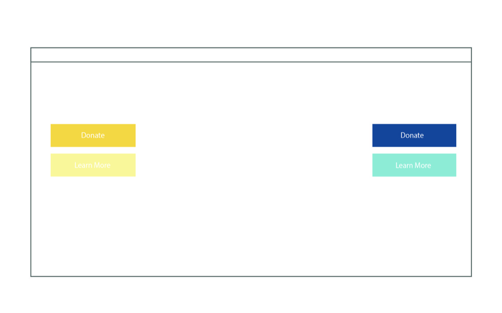

Solution
After doing research, I was able to create a Call to Action to fulfill the goal of the website, and I was able to create a style tile that expresses the desired feel and tone of the website.
Call to Action
After doing my own research and interviewing with the manager at PCHS, I thought the best call to action would be buttons that allowed the viewer to donate, learn more about their goals behind spaying/neutering and who they are, and their social media outlet. After talking with the manager, she did tell me how their biggest need is donations/funds. They get a lot of physical items donated but they need monetary donations the most. Also, she said one of their biggest goals is educating their community, so I think having a call to action that helps the viewer learn more about spaying/neutering and how they can make a difference would be a good idea. The last possible CTA I made was a Facebook one, because they look like they are trying to build up their page and it would be a great way for viewers to get more involved and connected with the organization. As for the colors, I think I want the background color of the website to be white, so making the call to actions a yellow or blue color would look nice. They’ll stand out in these ranges of blues and yellows.